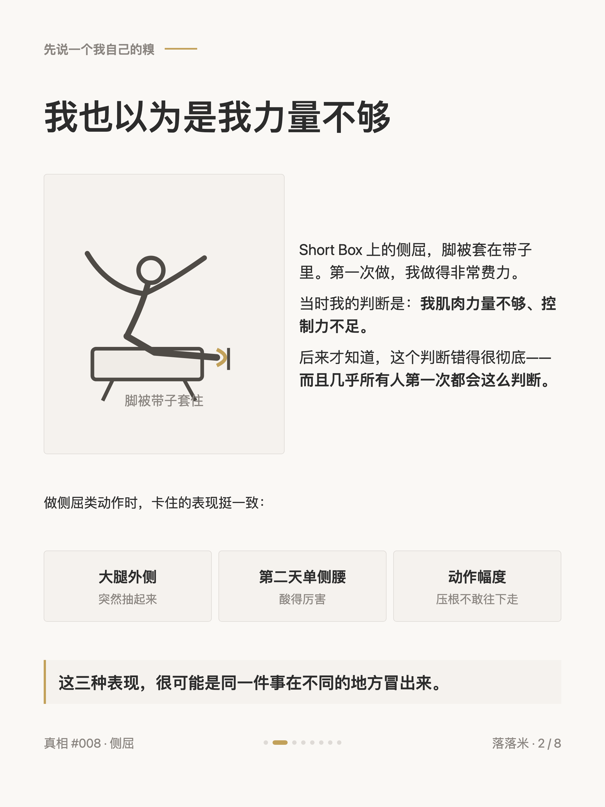
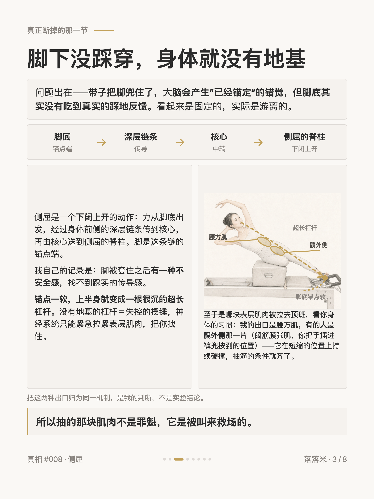
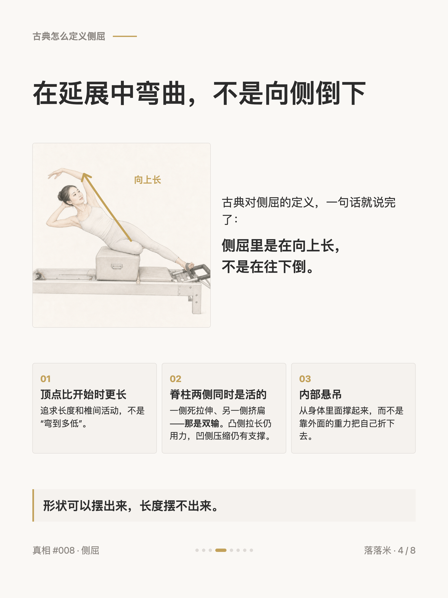
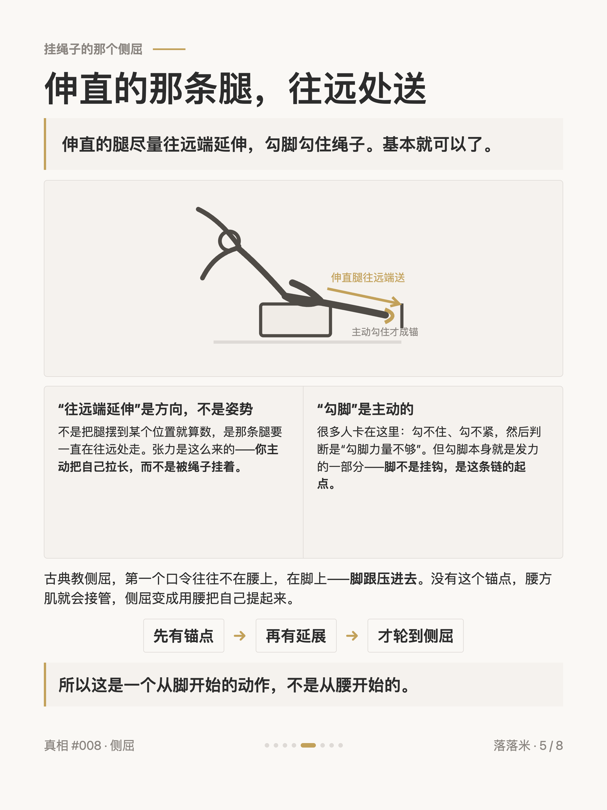
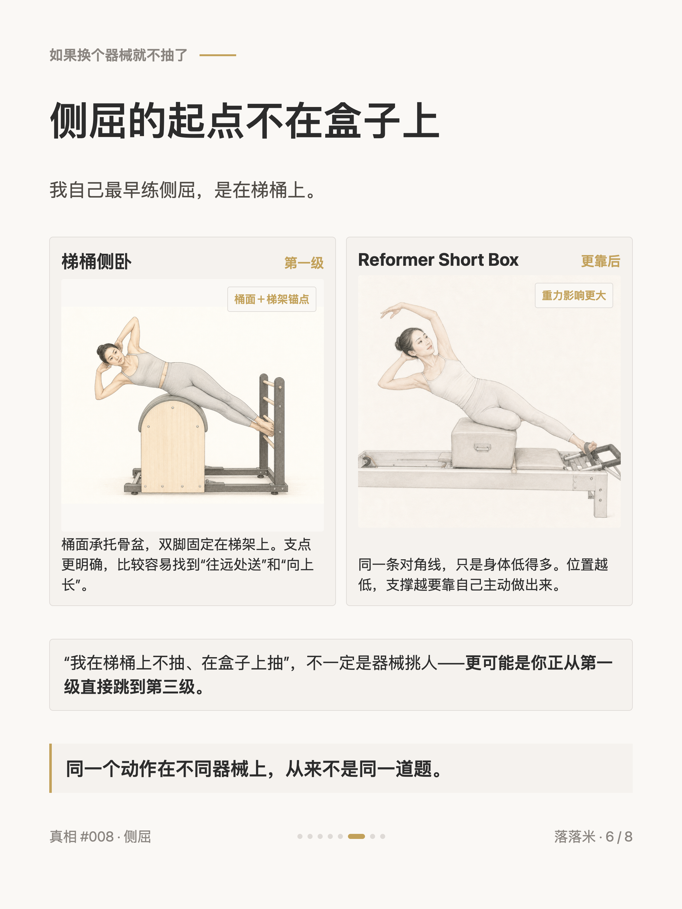
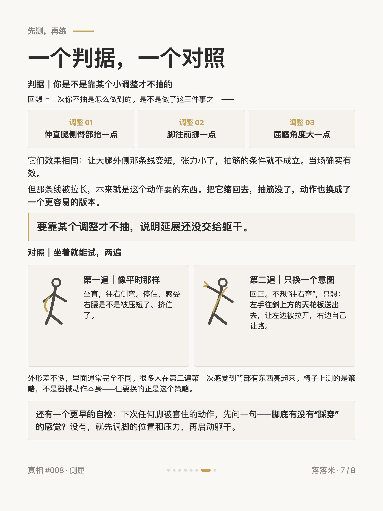
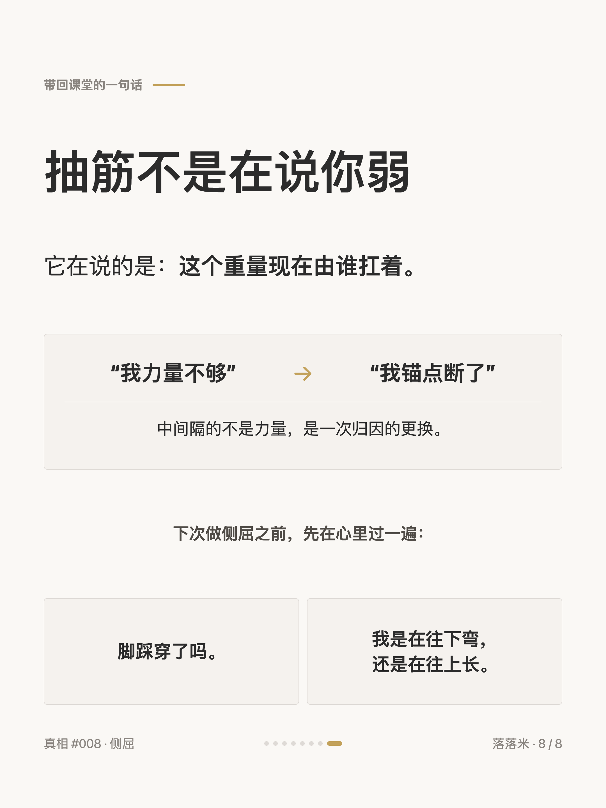

普拉提真相 #008
侧屈抽筋，你躲开的那一下才是重点

1 / 8

2 / 8

3 / 8

4 / 8

5 / 8

6 / 8

7 / 8

8 / 8
← 左右滑动浏览全部卡片 →
侧屈时大腿外侧突然抽起来，第一反应通常是「我力量不够」。但真正断掉的往往在更远的地方——脚下的锚点没建立。带子把脚兜住了，大脑会以为已经锚定，脚底其实没吃到真实的踩地反馈：看起来固定，实际游离。锚点一软，上半身就变成一根没有地基的超长杠杆，身体只能紧急拉紧表层肌肉把自己拽住——代偿找哪个出口，就在哪儿抽。
古典对侧屈的定义是在延展中弯曲，不是向侧倒下：顶点时身体应该比开始时更长，两侧同时是活的。而延展的前提是脚先踩穿——伸直的腿往远端延伸，勾脚勾住绳子，诀窍短得出乎意料。卡片末尾给了一个判据和一个坐着就能做的对照：要靠抬一点臀、挪一下脚才不抽，说明延展还没交给躯干。